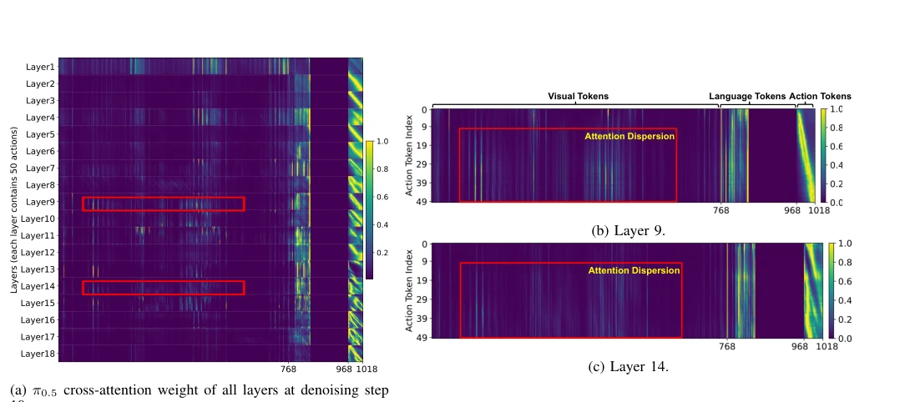
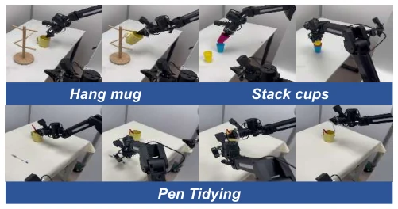

Fig. 2: Method Overview. Our framework dynamically determines action chunk sizes by monitoring the cross-attention entropy within the action expert. Conditioned on VLM states, the action expert identifies chunk boundaries by monitoring attention focus. This enables adaptive execution across task stages.

Fig. 3: Visualization of cross-attention dynamics within the action expert of π0.5. (a) provides a comprehensive view across all 18 layers, where the vertical axis represents 50 action queries per layer and the horizontal axis comprises 1,018 key tokens (768 visual, 200 language, and 50 action tokens). (b) and (c) present magnified views of Layer 9 and Layer 14. Red boxes highlight the pronounced attention dispersion for later-stage actions, whereas tokens with smaller indices exhibit negligible reliance on these visual features.
Fig. 5: Entropy patterns in X-VLA. Two distinct patterns are observed: the rising-plateau pattern reaches a sustained high-entropy regime, whereas the fluctuating-ascent pattern continues to vary without forming a stable plateau.

Fig. 6: Real-world tasks. We evaluate the generalizability of our adaptive chunking method across three representative real-world tasks: Hang mug, Stack cups, and Pen Tidying.